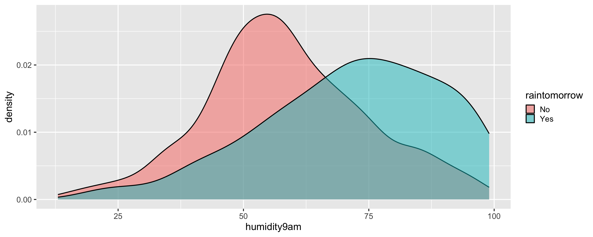

Logistic Regression
The notes for this lecture are derived from Chapter 13 of the Bayes Rules! book
\[Y = \begin{cases} \text{ Yes rain} & \\ \text{ No rain} & \\ \end{cases} \;\]
\[\begin{split} X_1 & = \text{ today's humidity at 9am (percent)} \\ \end{split}\]
Rows: 1,000
Columns: 5
$ day_of_year <dbl> 45, 11, 261, 347, 357, 254, 364, 293, 304, 231, 313, 208,…
$ raintomorrow <fct> No, No, Yes, No, No, No, No, No, Yes, Yes, No, No, No, No…
$ humidity9am <int> 55, 43, 62, 53, 65, 84, 48, 51, 47, 90, 53, 87, 83, 96, 8…
$ humidity3pm <int> 44, 16, 85, 46, 51, 59, 43, 34, 47, 57, 42, 46, 55, 56, 5…
$ raintoday <fct> No, No, No, No, No, Yes, No, No, Yes, Yes, No, No, Yes, Y…class: middle
Odds and Probability
\[\text{odds} = \frac{\pi}{1-\pi}\]
if prob of rain = \(\frac{2}{3}\) then \(\text{odds of rain } = \frac{2/3}{1-2/3} = 2\)
if prob of rain = \(\frac{1}{3}\) then \(\text{odds of rain } = \frac{1/3}{1-1/3} = \frac{1}{2}\)
if prob of rain = \(\frac{1}{2}\) then \(\text{odds of rain } = \frac{1/2}{1-1/2} = 1\)
Logistic regression model
likelihood: \(Y_i | \pi_i \sim \text{Bern}(\pi_i)\)
\(E(Y_i|\pi_i) = \pi_i\)
link function: \(g(\pi_i) = \beta_0 + \beta_1 X_{i1}\)
logit link function: \(Y_i|\beta_0,\beta_1 \stackrel{ind}{\sim} \text{Bern}(\pi_i) \;\; \text{ with } \;\; \log\left(\frac{\pi_i}{1 - \pi_i}\right) = \beta_0 + \beta_1 X_{i1}\)
\[\frac{\pi_i}{1-\pi_i} = e^{\beta_0 + \beta_1 X_{i1}} \;\;\;\; \text{ and } \;\;\;\; \pi_i = \frac{e^{\beta_0 + \beta_1 X_{i1}}}{1 + e^{\beta_0 + \beta_1 X_{i1}}}\]
Bayesian logistic regression model
\(\text{likelihood model:} \; \; \; Y_i | \beta_0, \beta_1 \;\;\;\stackrel{ind}{\sim} \text{Bern}(\pi_i)\text{ with } log(\frac{\pi_i}{1-\pi_i}) = \beta_0 + \beta_1X_{i1}\)
\(\text{prior models:}\)
\(\beta_0\sim N(m_0, s_0 )\)
\(\beta_1\sim N(m_1, s_1 )\)
\[\log(\text{odds}) = \log\left(\frac{\pi}{1-\pi}\right) = \beta_0 + \beta_1 X_1 + \cdots + \beta_p X_p \; . \]
When \((X_1,X_2,\ldots,X_p)\) are all 0, \(\beta_0\) is the typical log odds of the event of interest and \(e^{\beta_0}\) is the typical odds.
When controlling for the other predictors \((X_2,\ldots,X_p)\), let \(\text{odds}_x\) represent the typical odds of the event of interest when \(X_1 = x\) and \(\text{odds}_{x+1}\) the typical odds when \(X_1 = x + 1\). Then when \(X_1\) increases by 1, from \(x\) to \(x + 1\), \(\beta_1\) is the typical change in log odds and \(e^{\beta_1}\) is the typical multiplicative change in odds:
\[\beta_1 = \log(\text{odds}_{x+1}) - \log(\text{odds}_x) \;\;\; \text{ and } \;\;\; e^{\beta_1} = \frac{\text{odds}_{x+1}}{\text{odds}_x}\]
Priors for model 'rain_model_1'
------
Intercept (after predictors centered)
~ normal(location = 0, scale = 2.5)
Coefficients
Specified prior:
~ normal(location = 0, scale = 2.5)
Adjusted prior:
~ normal(location = 0, scale = 0.14)
------
See help('prior_summary.stanreg') for more details\[\pi = \frac{e^{\beta_0 + \beta_1 X_1}}{1 + e^{\beta_0 + \beta_1 X_1}}\]
# The first 50 posterior parameter sets
first_50 <- head(rain_model_1_df, 50)
# Function that calculates model trend on probability scale
prob_trend <- function(beta0, beta1, x){
exp(beta0 + beta1*x) / (1 + exp(beta0 + beta1*x))}
# Plot the first 50 posterior model trends
ggplot(weather, aes(x = humidity9am, y = raintomorrow)) +
mapply(function(beta0, beta1) {
stat_function(fun = prob_trend,
args = list(beta0 = beta0, beta1 = beta1), size = 0.1)
},
beta0 = first_50$`(Intercept)`, beta1 = first_50$humidity9am
) +
labs(y = "probability of rain")Prediction and Classification
\[\begin{equation} \log\left( \frac{\pi}{1-\pi}\right) = \beta_0 + \beta_1 * 99 \;\;\;\; \text{ and } \;\;\;\; \pi = \frac{e^{\beta_0 + \beta_1 * 99}}{1 + e^{\beta_0 + \beta_1 * 99}} \; . \end{equation}\]
(Intercept) humidity9am log_odds prob Y
1 -4.260952 0.04413347 0.10826192 0.5270391 0
2 -4.125510 0.04307958 0.13936858 0.5347859 0
3 -4.476874 0.04587014 0.06427016 0.5160620 1\(\beta_0 = -4.261\) and \(\beta_1 = 0.044\)
\(\log( \frac{\pi}{1-\pi}) = -4.261 + 0.044 * 99 = 0.095\)
\(\pi = \frac{e^{-4.261 + 0.044 * 99}}{1 + e^{-4.261 + 0.044 * 99}} = 0.52\) and \(Y\) is a random draw from Bern(0.52)
Classification rule
- If \(p \ge c\), then classify \(Y\) as 1.
- If \(p < c\), then classify \(Y\) as 0.
1 2 3 4 5 6 7 8 9 10 11 12 13 14 15 16 17 18 19 20 21 22 23 24 25 26 27 28
[1,] 0 0 0 1 0 0 0 0 0 0 1 0 0 0 1 0 0 0 0 1 0 0 0 0 0 0 0 0
[2,] 1 0 0 0 0 0 0 1 0 1 0 1 0 1 0 0 0 0 1 0 0 0 0 1 0 0 0 0
[3,] 0 0 0 0 0 0 0 0 0 0 0 0 0 0 0 0 1 0 0 0 0 1 0 0 0 0 0 1
29 30 31 32 33 34 35 36 37 38 39 40 41 42 43 44 45 46 47 48 49 50 51 52 53
[1,] 1 0 0 0 1 0 1 0 0 0 0 0 0 0 0 0 0 0 1 0 0 0 1 0 0
[2,] 1 1 0 1 0 0 0 1 0 0 0 0 1 1 0 0 0 0 0 0 1 0 0 0 0
[3,] 0 0 0 0 0 0 1 0 1 0 0 1 0 0 0 0 0 0 1 0 0 1 0 0 0
54 55 56 57 58 59 60 61 62 63 64 65 66 67 68 69 70 71 72 73 74 75 76 77 78
[1,] 0 1 0 0 0 0 0 1 0 0 0 0 0 0 0 0 1 0 0 0 0 0 0 0 0
[2,] 0 0 0 0 1 0 0 0 1 0 1 0 0 0 0 0 0 0 0 1 1 1 0 0 0
[3,] 0 0 0 1 0 1 0 0 1 0 0 0 0 1 0 0 0 0 0 0 1 1 0 0 1
79 80 81 82 83 84 85 86 87 88 89 90 91 92 93 94 95 96 97 98 99 100 101 102
[1,] 0 0 0 0 1 0 0 0 0 0 0 0 1 0 0 0 0 0 0 1 0 0 0 0
[2,] 0 0 0 1 0 0 0 0 0 1 0 1 0 0 0 0 0 1 0 1 0 0 0 0
[3,] 0 0 0 0 0 0 1 0 0 0 0 0 0 0 1 0 0 0 0 1 1 0 0 0
103 104 105 106 107 108 109 110 111 112 113 114 115 116 117 118 119 120
[1,] 0 0 0 0 0 0 0 0 1 0 0 0 0 0 0 0 0 0
[2,] 0 0 0 0 0 1 0 1 0 0 0 1 0 0 0 0 0 1
[3,] 0 1 0 0 0 0 0 0 0 0 0 0 0 0 0 0 0 0
121 122 123 124 125 126 127 128 129 130 131 132 133 134 135 136 137 138
[1,] 0 0 1 0 0 0 0 0 0 0 1 0 0 0 0 1 1 1
[2,] 0 0 0 0 0 1 0 0 0 1 0 0 0 0 0 0 1 0
[3,] 0 0 0 0 0 0 0 0 1 0 1 0 0 0 1 0 0 0
139 140 141 142 143 144 145 146 147 148 149 150 151 152 153 154 155 156
[1,] 0 0 0 0 0 0 0 0 0 1 0 0 0 0 0 0 0 1
[2,] 0 0 0 0 0 0 1 1 0 0 1 0 0 1 0 0 0 0
[3,] 1 0 1 0 0 0 0 0 0 1 0 0 0 1 0 1 0 0
157 158 159 160 161 162 163 164 165 166 167 168 169 170 171 172 173 174
[1,] 0 0 0 0 0 0 0 0 1 0 1 0 1 0 1 0 1 0
[2,] 0 0 1 1 0 0 0 1 0 0 1 0 0 0 0 0 0 0
[3,] 0 0 0 0 0 0 0 1 0 0 0 0 1 1 0 0 0 0
175 176 177 178 179 180 181 182 183 184 185 186 187 188 189 190 191 192
[1,] 0 0 0 0 0 0 0 1 0 0 0 0 0 0 0 0 1 0
[2,] 0 0 0 0 0 0 0 0 0 1 0 0 0 1 0 1 1 1
[3,] 0 0 0 1 0 0 0 0 0 0 0 0 0 1 0 0 0 0
193 194 195 196 197 198 199 200 201 202 203 204 205 206 207 208 209 210
[1,] 1 0 0 0 0 0 0 0 0 0 0 0 1 1 0 0 1 1
[2,] 0 0 0 0 1 0 0 0 0 0 0 0 0 0 1 0 1 1
[3,] 1 0 0 0 0 1 0 0 0 0 0 0 0 1 0 0 0 0
211 212 213 214 215 216 217 218 219 220 221 222 223 224 225 226 227 228
[1,] 0 0 0 1 0 0 0 0 0 0 0 0 0 0 0 0 0 0
[2,] 0 0 0 0 1 0 0 0 0 0 1 1 0 1 0 0 0 0
[3,] 0 0 0 0 1 0 0 0 0 0 1 0 0 0 0 1 0 0
229 230 231 232 233 234 235 236 237 238 239 240 241 242 243 244 245 246
[1,] 0 0 1 1 1 0 1 0 1 1 1 0 0 0 0 0 0 0
[2,] 1 1 0 0 0 1 0 0 0 1 0 0 1 0 0 0 0 0
[3,] 0 1 0 0 1 0 0 0 0 1 1 0 0 0 1 0 0 0
247 248 249 250 251 252 253 254 255 256 257 258 259 260 261 262 263 264
[1,] 0 0 0 0 1 0 0 1 0 0 0 0 0 0 0 0 0 0
[2,] 0 0 0 0 0 0 0 0 0 1 1 1 0 0 0 0 0 1
[3,] 0 0 0 1 1 0 1 0 0 1 0 0 0 0 0 0 0 0
265 266 267 268 269 270 271 272 273 274 275 276 277 278 279 280 281 282
[1,] 0 0 0 0 1 0 1 0 0 0 1 0 1 0 0 0 0 0
[2,] 0 0 0 0 1 0 1 0 0 1 0 0 0 0 0 1 1 1
[3,] 0 0 0 0 0 0 0 0 0 0 0 0 0 0 0 0 1 0
283 284 285 286 287 288 289 290 291 292 293 294 295 296 297 298 299 300
[1,] 1 0 0 0 0 0 0 0 1 1 1 0 0 0 1 1 0 0
[2,] 1 0 1 0 0 0 0 0 0 0 0 0 1 1 0 1 0 0
[3,] 0 0 0 0 0 0 0 0 0 1 1 0 0 0 0 1 1 0
301 302 303 304 305 306 307 308 309 310 311 312 313 314 315 316 317 318
[1,] 0 0 0 0 1 0 0 0 0 0 0 1 0 1 0 0 0 0
[2,] 0 0 0 0 0 1 0 0 1 0 0 0 0 1 0 0 1 0
[3,] 0 0 1 0 0 0 0 0 0 0 0 1 0 1 0 0 1 0
319 320 321 322 323 324 325 326 327 328 329 330 331 332 333 334 335 336
[1,] 0 0 0 0 0 0 0 0 0 0 0 0 0 0 1 1 0 0
[2,] 0 1 0 0 0 0 1 1 0 0 0 0 0 0 0 1 0 0
[3,] 0 1 0 0 0 0 0 0 0 0 0 0 0 0 0 0 0 1
337 338 339 340 341 342 343 344 345 346 347 348 349 350 351 352 353 354
[1,] 1 0 0 1 0 0 0 0 1 0 0 0 1 0 0 0 1 1
[2,] 1 0 0 0 0 0 0 1 1 0 0 1 1 0 0 1 0 0
[3,] 1 0 0 0 0 1 0 1 0 0 0 0 0 0 0 1 0 0
355 356 357 358 359 360 361 362 363 364 365 366 367 368 369 370 371 372
[1,] 0 0 1 0 0 1 1 0 0 0 0 0 0 1 0 0 0 0
[2,] 0 0 1 0 0 0 0 1 0 0 1 1 1 1 0 0 0 0
[3,] 0 0 1 0 0 0 0 1 0 1 0 0 0 0 0 0 1 0
373 374 375 376 377 378 379 380 381 382 383 384 385 386 387 388 389 390
[1,] 0 0 0 0 0 1 0 0 0 1 0 0 0 1 0 0 0 0
[2,] 0 0 0 0 1 1 0 0 0 0 0 0 1 0 1 1 0 1
[3,] 0 1 0 0 1 0 1 0 0 0 0 0 0 0 0 0 0 0
391 392 393 394 395 396 397 398 399 400 401 402 403 404 405 406 407 408
[1,] 0 0 0 0 0 0 0 0 0 0 1 0 0 0 0 0 0 0
[2,] 1 0 0 1 0 0 0 0 1 0 0 0 0 1 0 0 0 0
[3,] 0 0 0 1 1 1 0 0 1 0 1 0 0 0 0 0 0 0
409 410 411 412 413 414 415 416 417 418 419 420 421 422 423 424 425 426
[1,] 1 0 0 0 0 0 0 0 0 0 0 0 1 0 0 0 0 0
[2,] 1 1 0 1 0 0 0 0 0 1 1 0 0 0 1 0 0 0
[3,] 0 0 0 0 0 1 0 0 0 0 0 1 0 0 0 1 0 0
427 428 429 430 431 432 433 434 435 436 437 438 439 440 441 442 443 444
[1,] 0 0 0 1 1 1 1 0 0 0 1 0 1 0 1 0 1 0
[2,] 0 0 1 0 1 0 1 1 0 0 0 0 1 0 0 0 1 0
[3,] 1 0 0 0 0 1 0 0 0 0 0 0 0 0 0 0 0 0
445 446 447 448 449 450 451 452 453 454 455 456 457 458 459 460 461 462
[1,] 0 0 0 0 1 0 0 1 0 0 1 1 0 0 0 0 0 0
[2,] 0 1 0 1 0 0 0 0 0 0 0 0 0 1 0 0 0 0
[3,] 0 0 1 1 1 0 0 0 0 0 0 1 0 0 0 0 0 0
463 464 465 466 467 468 469 470 471 472 473 474 475 476 477 478 479 480
[1,] 0 0 0 0 0 1 0 1 0 1 1 0 0 0 0 0 0 1
[2,] 0 0 0 0 0 0 0 1 0 0 0 0 0 0 1 0 1 0
[3,] 0 0 0 0 1 1 0 0 0 0 0 0 0 0 0 0 1 0
481 482 483 484 485 486 487 488 489 490 491 492 493 494 495 496 497 498
[1,] 0 1 0 0 0 1 0 1 0 0 0 1 0 1 0 0 1 0
[2,] 0 0 0 0 0 0 0 1 0 0 0 0 0 0 0 0 0 1
[3,] 0 1 1 0 0 0 0 0 1 0 0 1 0 0 1 0 1 0
499 500 501 502 503 504 505 506 507 508 509 510 511 512 513 514 515 516
[1,] 0 0 0 0 0 0 0 1 0 0 0 0 0 0 0 1 1 0
[2,] 0 0 0 0 0 0 0 0 0 1 1 0 0 0 0 0 0 0
[3,] 0 1 0 0 0 0 0 1 1 0 1 0 0 0 0 0 1 0
517 518 519 520 521 522 523 524 525 526 527 528 529 530 531 532 533 534
[1,] 0 1 1 1 1 1 0 0 1 0 0 0 0 0 0 0 0 0
[2,] 0 0 1 0 0 0 0 0 1 0 1 0 0 0 0 1 0 0
[3,] 0 0 1 0 0 0 0 0 0 0 0 0 0 0 1 0 0 0
535 536 537 538 539 540 541 542 543 544 545 546 547 548 549 550 551 552
[1,] 0 0 0 1 0 0 0 0 0 1 0 0 1 0 0 0 1 0
[2,] 0 0 0 0 1 0 0 0 0 1 0 0 0 0 0 0 0 0
[3,] 0 0 0 0 1 0 0 0 1 1 1 0 1 0 0 0 1 0
553 554 555 556 557 558 559 560 561 562 563 564 565 566 567 568 569 570
[1,] 1 0 0 0 0 0 0 0 1 0 1 0 0 0 1 0 0 0
[2,] 0 0 0 1 0 0 0 0 0 1 1 0 0 0 0 0 0 0
[3,] 0 0 0 1 1 1 1 0 0 1 0 0 0 0 0 0 0 1
571 572 573 574 575 576 577 578 579 580 581 582 583 584 585 586 587 588
[1,] 0 0 0 0 1 0 0 0 0 0 0 1 0 1 0 0 0 0
[2,] 1 0 0 0 0 0 0 0 0 1 0 0 0 0 1 0 0 0
[3,] 0 0 0 0 1 0 1 0 0 0 0 0 1 0 0 1 0 0
589 590 591 592 593 594 595 596 597 598 599 600 601 602 603 604 605 606
[1,] 0 0 1 0 0 1 0 0 0 0 1 0 0 0 0 0 0 1
[2,] 0 0 0 0 0 0 0 0 0 0 1 0 0 0 0 0 0 0
[3,] 1 0 0 0 0 0 0 0 0 0 1 0 0 0 0 1 1 1
607 608 609 610 611 612 613 614 615 616 617 618 619 620 621 622 623 624
[1,] 0 0 0 0 1 0 0 0 0 0 1 0 0 0 0 0 0 0
[2,] 0 0 0 1 0 0 0 0 0 0 0 0 0 0 0 0 1 0
[3,] 0 0 0 0 0 0 0 0 0 1 0 0 0 1 0 0 0 0
625 626 627 628 629 630 631 632 633 634 635 636 637 638 639 640 641 642
[1,] 0 0 0 0 0 0 0 0 0 0 0 0 0 1 1 0 0 0
[2,] 0 0 0 0 0 0 0 0 1 0 0 0 0 0 1 0 0 1
[3,] 0 0 1 0 0 1 0 0 0 0 0 0 0 0 0 0 0 0
643 644 645 646 647 648 649 650 651 652 653 654 655 656 657 658 659 660
[1,] 0 0 0 0 1 0 1 0 0 0 0 0 0 0 1 0 0 0
[2,] 0 0 0 0 0 0 0 0 1 0 0 0 1 0 0 0 1 0
[3,] 1 0 1 0 1 1 0 0 0 0 0 0 0 0 0 0 0 1
661 662 663 664 665 666 667 668 669 670 671 672 673 674 675 676 677 678
[1,] 0 1 1 1 0 0 0 0 0 1 0 0 0 0 0 0 0 0
[2,] 0 1 0 0 0 1 0 0 0 0 0 0 0 0 0 0 0 0
[3,] 0 0 1 0 0 0 1 0 0 0 0 0 0 0 0 0 0 0
679 680 681 682 683 684 685 686 687 688 689 690 691 692 693 694 695 696
[1,] 0 0 1 0 0 0 0 0 0 1 0 0 0 0 0 0 0 1
[2,] 0 0 0 0 0 0 0 0 0 0 0 1 1 1 0 0 0 0
[3,] 0 0 1 0 0 0 1 0 0 0 0 1 1 1 0 0 0 1
697 698 699 700 701 702 703 704 705 706 707 708 709 710 711 712 713 714
[1,] 1 0 1 1 0 1 0 0 0 0 0 0 0 0 1 0 1 0
[2,] 1 0 0 1 0 0 0 0 0 0 1 0 0 0 0 0 1 0
[3,] 0 0 1 1 1 0 0 0 0 0 1 0 0 0 1 1 0 0
715 716 717 718 719 720 721 722 723 724 725 726 727 728 729 730 731 732
[1,] 0 1 0 0 0 0 0 0 0 0 0 1 0 1 0 0 0 0
[2,] 0 0 0 0 0 0 0 0 0 0 0 0 1 0 0 0 0 0
[3,] 0 0 1 0 0 0 0 1 1 1 0 1 0 0 0 0 0 0
733 734 735 736 737 738 739 740 741 742 743 744 745 746 747 748 749 750
[1,] 0 0 0 0 0 0 0 0 1 0 0 0 0 0 0 0 1 0
[2,] 0 0 0 0 0 1 0 1 0 0 1 1 1 0 0 1 0 0
[3,] 1 0 0 1 0 0 0 1 0 1 0 0 0 0 0 0 0 0
751 752 753 754 755 756 757 758 759 760 761 762 763 764 765 766 767 768
[1,] 0 0 0 0 0 0 0 0 0 1 0 0 0 0 0 1 0 1
[2,] 0 0 1 0 1 0 0 0 0 1 1 0 0 1 0 1 0 1
[3,] 0 0 1 0 0 0 0 0 0 0 0 0 0 0 0 0 0 1
769 770 771 772 773 774 775 776 777 778 779 780 781 782 783 784 785 786
[1,] 1 0 0 1 0 0 0 1 1 0 0 0 0 0 1 0 0 0
[2,] 1 0 0 0 0 0 0 0 1 0 0 0 0 0 0 0 0 0
[3,] 0 0 0 1 0 0 0 0 0 1 0 0 0 0 1 0 0 0
787 788 789 790 791 792 793 794 795 796 797 798 799 800 801 802 803 804
[1,] 1 0 0 0 1 0 0 0 1 0 1 0 0 0 0 1 0 0
[2,] 0 0 1 0 0 0 0 0 0 0 0 0 0 0 0 0 0 0
[3,] 0 0 0 0 0 0 0 0 0 0 0 0 0 1 0 0 1 0
805 806 807 808 809 810 811 812 813 814 815 816 817 818 819 820 821 822
[1,] 0 1 0 0 1 0 0 0 0 0 0 1 0 0 0 0 1 1
[2,] 1 1 0 0 1 0 0 0 0 0 0 0 0 0 1 1 0 0
[3,] 0 0 0 0 0 0 0 0 0 0 0 1 0 0 0 0 0 0
823 824 825 826 827 828 829 830 831 832 833 834 835 836 837 838 839 840
[1,] 0 0 0 0 0 0 0 0 0 0 0 0 0 1 1 1 1 0
[2,] 1 0 1 0 0 1 0 0 0 0 0 1 1 0 0 0 0 1
[3,] 0 0 0 0 0 0 0 0 0 0 0 0 0 1 0 0 1 0
841 842 843 844 845 846 847 848 849 850 851 852 853 854 855 856 857 858
[1,] 0 0 0 1 0 1 0 1 1 0 1 0 0 0 0 0 0 0
[2,] 1 0 0 0 0 1 0 1 0 0 1 0 1 0 1 1 0 0
[3,] 0 0 0 1 0 0 1 0 1 0 0 0 0 0 0 0 0 0
859 860 861 862 863 864 865 866 867 868 869 870 871 872 873 874 875 876
[1,] 0 1 0 0 0 0 0 0 0 1 1 0 0 0 0 0 0 0
[2,] 0 0 0 0 0 0 1 0 0 0 0 0 1 0 0 0 0 0
[3,] 0 0 0 0 1 0 0 0 1 0 1 0 0 0 0 0 0 0
877 878 879 880 881 882 883 884 885 886 887 888 889 890 891 892 893 894
[1,] 1 0 0 1 0 0 0 0 1 1 0 0 0 0 0 0 0 0
[2,] 1 0 0 0 0 1 0 0 0 0 0 0 0 0 0 0 1 0
[3,] 0 0 0 0 0 0 1 0 0 1 0 0 0 0 0 0 1 0
895 896 897 898 899 900 901 902 903 904 905 906 907 908 909 910 911 912
[1,] 1 0 1 0 0 0 1 0 0 0 0 0 0 0 0 0 0 1
[2,] 0 1 0 0 0 0 1 0 1 0 0 1 0 0 0 0 0 0
[3,] 1 0 0 0 0 0 0 0 0 0 0 0 0 0 0 0 0 0
913 914 915 916 917 918 919 920 921 922 923 924 925 926 927 928 929 930
[1,] 0 0 0 1 0 0 0 0 0 0 0 1 0 1 0 1 1 0
[2,] 0 0 1 0 0 0 1 0 0 0 0 1 0 0 0 0 0 0
[3,] 0 0 0 0 0 1 0 0 1 0 0 0 1 1 0 0 1 0
931 932 933 934 935 936 937 938 939 940 941 942 943 944 945 946 947 948
[1,] 0 0 0 0 0 0 0 0 1 0 1 0 0 0 1 0 0 0
[2,] 0 0 0 0 0 0 1 0 0 0 0 0 0 0 0 0 1 0
[3,] 0 0 0 0 0 0 0 0 0 0 0 0 0 0 1 0 0 0
949 950 951 952 953 954 955 956 957 958 959 960 961 962 963 964 965 966
[1,] 0 0 0 0 0 0 1 0 0 1 0 1 0 0 0 1 0 0
[2,] 0 1 0 0 0 0 0 0 1 0 1 0 0 0 1 0 0 0
[3,] 0 0 0 0 0 0 0 0 0 0 0 0 0 1 1 0 0 0
967 968 969 970 971 972 973 974 975 976 977 978 979 980 981 982 983 984
[1,] 0 0 0 0 0 0 0 0 0 0 0 0 0 0 0 1 0 1
[2,] 0 0 0 0 0 0 0 0 1 1 0 0 0 1 0 0 0 1
[3,] 0 0 0 0 0 0 0 0 0 1 0 0 0 0 1 0 0 1
985 986 987 988 989 990 991 992 993 994 995 996 997 998 999 1000
[1,] 0 0 0 0 1 0 0 0 0 0 0 0 0 1 0 0
[2,] 0 0 0 1 0 0 1 0 0 1 0 0 0 0 0 0
[3,] 0 1 0 0 0 0 0 0 0 0 0 1 0 1 0 1Confusion Matrix
Sensitivity, specificity, and overall accuracy
A confusion matrix summarizes the results of these classifications relative to the actual observations where \(a + b + c + d = n\):
| \(\hat{Y} = 0\) | \(\hat{Y} = 1\) | |
|---|---|---|
| \(Y = 0\) | \(a\) | \(b\) |
| \(Y = 1\) | \(c\) | \(d\) |
\[\text{overall accuracy} = \frac{a + d}{a + b + c + d}\]
\[\text{sensitivity} = \frac{d}{c + d} \;\;\;\; \text{ and } \;\;\;\; \text{specificity} = \frac{a}{a + b}\]